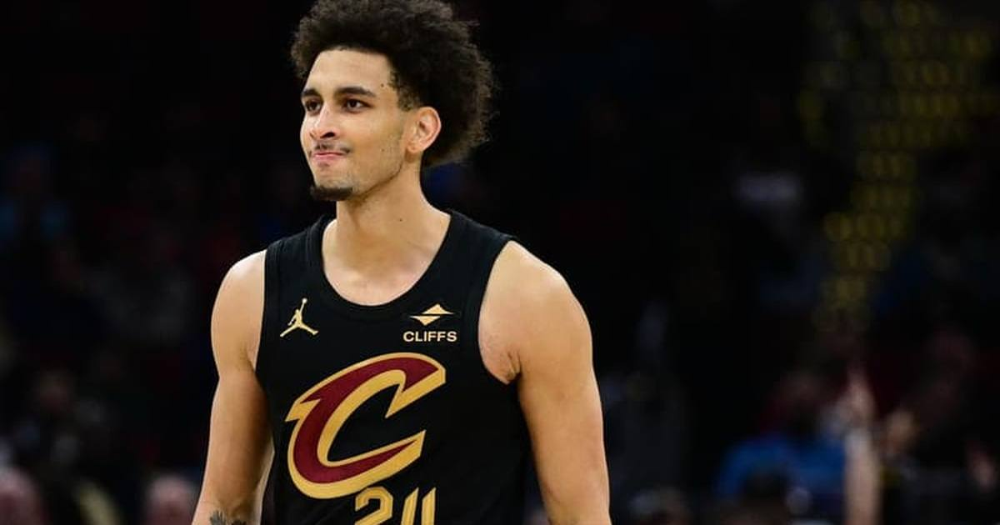

Tyrese Proctor's first triple-double — at any level — lifts the short-handed Cavs past the Mavericks
Tyrese Proctor had never recorded a triple-double at any level of organized basketball. Then the Cavaliers rested their entire starting five, handed the 22-year-old Australian his second career start, and watched him put up 24 points, 11 rebounds and 10 assists in a 127-117 win over Dallas.

Disclosure: this post contains affiliate links. I earn a commission on qualifying purchases.
The night
Tyrese Proctor had never done it before. Not in the NBA, not at Duke, not anywhere — the 22-year-old Australian had never recorded a triple-double at any level of organized basketball.
Then the Cavaliers handed him the keys to a team missing its entire starting five, and he went out and got one anyway.
Proctor finished with 24 points, 11 rebounds and 10 assists as Cleveland beat the Dallas Mavericks 127-117 on Saturday night at Rocket Arena, in front of a sellout crowd of 19,432 that had come to celebrate the 10-year anniversary of the franchise's 2016 championship and ended up watching the future instead. All three numbers were career marks: the points and assists were career highs, and the rebounds matched his best.
The chaos before tip
The box score only tells half of this one. The day itself was a mess.
Cleveland played in Miami on Friday night, lost 133-121, then got stuck in nationwide travel disruptions and didn't land back in Cleveland until late Saturday morning — a three-hour flight that arrived hours before tip on the second night of a back-to-back. Coach Kenny Atkinson looked at the schedule, looked at the injury report, and sat everybody: Donovan Mitchell (knee), James Harden (calf), Peyton Watson (hamstring) and Jarrett Allen (knee) were all ruled out, and Evan Mobley missed his second straight game with a toe sprain.
That left Jaylon Tyson as the only returning starter from Friday. The other four spots went to reserves — Mario Hezonja and Thomas Bryant making their first starts of the season, Meleek Thomas his third, and Proctor his second. Proctor had started Wednesday's loss to Oklahoma City in place of Watson; this was the first time he'd been asked to run the show.
Dallas, for its part, had no such excuse. The Mavericks were at close to full strength, with Kyrie Irving going for a game-high 34 points and Cooper Flagg — Proctor's former Duke teammate — adding 18 and 8. Cleveland led by 18 at halftime anyway, after a 38-point second quarter, and never really let Dallas back in it. Proctor buried back-to-back threes in the fourth to push the lead to 113-91, the largest of the night.
The line
It wasn't just the counting stats. Proctor shot 10-of-19 from the field and 4-of-13 from three, and he did it while playing the point on a team that had no other ball-handler to lean on. He'd set his previous career high — 22 points — the night before in Miami. Twenty-four hours later he'd beaten it, and added the rebounding and playmaking to turn a good night into a historic one.
Proctor, Nov. 14 vs Dallas: 24; 11; 10
Proctor, previous career highs: 22; 11; 8
He is the first Cavalier with a triple-double since Max Strus did it against Charlotte on April 14, 2024 — more than two and a half years ago. And the "at any level" part is what makes it stick: this is a player who ran the point for three years at Duke and for the Australian national team from the age of 16, and he'd never once finished a game with double figures in three categories. The 49th pick of the 2025 draft, on a four-year, $8.69 million deal, picked the most improbable night of the season to do it for the first time.
Everybody ate
The fun of this game is that Proctor wasn't the only reserve who went off. All five starters scored in double figures — Hezonja had 22 on 9-of-12 shooting, Thomas had 20, Bryant had 19 to go with 11 rebounds of his own, and Tyson had 18 — and Norchad Omier added 13 off the bench. Six Cavaliers in double figures, on a night the team started the day in another city and finished it without a single member of its usual starting five.
That's the part that will sting in Dallas. The Mavericks lost to a team that, on paper, shouldn't have been able to score 127 points. Cleveland shot its way to a 71-53 halftime lead and kept answering every Dallas run, and the win evened the Cavs' record at 7-7. Dallas fell to 7-6, and gets less than a day to think about it — the Mavs play in Boston on Sunday.
What's next
Cleveland has a three-game homestand coming up — the Bulls, Grizzlies and Pacers all visit Rocket Arena this week — and the regulars will be back in the lineup. Proctor will go back to a reserve role, and his minutes will come down. That's fine. Nights like this one are why you keep a 22-year-old second-round pick ready: sometimes the whole starting five sits down, the travel goes sideways, and the kid you drafted 49th runs the show like he's been doing it for years.
Gear up: Fanatics